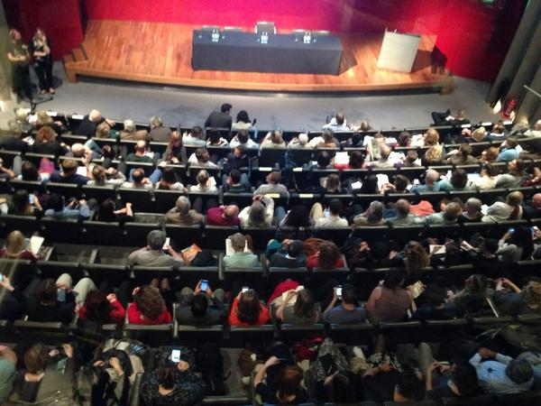

#MuseumOfTheFuture – second debate
The second #MuseumOfTheFuture debate 'Changing public dialogues with museum collections in the digital age' took place on Thursday 16 October
-
 Chris, our Head of Digital, blogs about 5 digital megatrends towards the #MuseumOfTheFuture http:// ow.ly/CR6M1 pic.twitter.com/cvEqTWClYT
Chris, our Head of Digital, blogs about 5 digital megatrends towards the #MuseumOfTheFuture http:// ow.ly/CR6M1 pic.twitter.com/cvEqTWClYT -
Follow #MuseumOfTheFuture tonight from 19.00 BST for the debate on museum collections in the digital age pic.twitter.com/VVHqdndK3u
-
 If you’d rather not follow the #MuseumOfTheFuture tweets tonight, you can always mute us and come back later! pic.twitter.com/tOeZxaXcBw
If you’d rather not follow the #MuseumOfTheFuture tweets tonight, you can always mute us and come back later! pic.twitter.com/tOeZxaXcBw -
The theatre is filling up for the second #MuseumOfTheFuture debate, focusing on museum collections in the digital age pic.twitter.com/wTNsWl5CfM
-
Lots of devices at #MuseumOfTheFuture tonight! Remember to use the hashtag... pic.twitter.com/fVKhjTEOGy
-
Chairman of the Trustees @richardlambert5 is welcoming the panel and audience to #MuseumOfTheFuture pic.twitter.com/cDgPy0gMnC
-
 Very well behaved a audience @britishmuseum #museumofthefuture . Immediate silence as the panel sat down. #anticipation
Very well behaved a audience @britishmuseum #museumofthefuture . Immediate silence as the panel sat down. #anticipation -
 Panellists include architect Sir David Chipperfield & @uksciencechief Professor Sir Mark Walport… #MuseumOfTheFuture pic.twitter.com/gDNP1e5TlM
Panellists include architect Sir David Chipperfield & @uksciencechief Professor Sir Mark Walport… #MuseumOfTheFuture pic.twitter.com/gDNP1e5TlM -
…plus Amit Sood, founder of @googleart & Sonita Alleyne, CEO and founder of the @YesProgramme #MuseumOfTheFuture pic.twitter.com/5lMLvVaxW6
-
The Museum's Director, Neil MacGregor, is giving an introduction to this #MuseumOfTheFuture debate pic.twitter.com/YBHszTJX2O
-
High res images freely available and wifi throughout the museum. @britishmuseum aligns with @rijksmuseum and @metmuseum #MuseumOfTheFuture
-
2 million objects digitised, another 8-10 (million!) to go #museumofthefuture
-
We've just announced that the British Museum has arrived in Minecraft! #MuseumOfTheFuture https://www. youtube.com/watch?v=qO62QE D28jg … pic.twitter.com/PHDBDVkuI2
-
Amit Sood says they started @googleart for people who didn't have access to museums and galleries #MuseumOfTheFuture
-
Amit Sood: a museum is much more than a building #MuseumOfTheFuture
-
Amit Sood: the #MuseumOfTheFuture should redefine the concept of storytelling and access for all
-
Sonita Alleyne says she wants #MuseumOfTheFuture to be a great experience, easy to use
-
Sonita Alleyne: technology is there to enhance the visitors' experience but shouldn't disrupt it #MuseumOfTheFuture
-
Sonita Alleyne: I'd like a smart #MuseumOfTheFuture able to track my visit – a seamless transfer of information
-
Mark Walport @uksciencechief : we're in the middle of a digital revolution but there's still much more to do #MuseumOfTheFuture
-
Mark Walport: we're approaching an 'internet of things' where objects have microchips and can talk to each other #MuseumOfTheFuture
-
Mark Walport: I'd argue that none of this takes away from the magic of the original object #MuseumOfTheFuture
-
David Chipperfield: the power of objects is not to be underestimated #MuseumOfTheFuture
-
David Chipperfield: technology can help us, giving context, but the museum is not a book, not a video... #MuseumOfTheFuture
-
David Chipperfield: as an architect one has to believe in the physical of the real #MuseumOfTheFuture
-
#MuseumOfTheFuture Digital democratises knowledge - let's utalise that. Make museum content more sharable.
-
Please please please don't buzzfeedify the British museum. #MuseumOfTheFuture
-
#MuseumOfTheFuture what should museums be collecting now for future generations?
-
 Definitely! But do make content more shareable! " @artfletch : Please please please don't buzzfeedify the British museum. #MuseumOfTheFuture ”
Definitely! But do make content more shareable! " @artfletch : Please please please don't buzzfeedify the British museum. #MuseumOfTheFuture ” -
@artfletch @britishmuseum Alternatively: do!
-
Lots of ideas being discussed at #MuseumOfTheFuture could be achieved by making more collections available as open data @britishmuseum
-
 My favourite idea so far linking objects across museums, their original locations and info (also academic research!) #MuseumOfTheFuture
My favourite idea so far linking objects across museums, their original locations and info (also academic research!) #MuseumOfTheFuture -
-
Mark Walport: #MuseumOfTheFuture is the opportunity to share things with other museums, exhibitions – democratising beautiful things
-
Viewing objects 'physically' and 'virtually' aren't competing but complementing each other #MuseumOfTheFuture @britishmuseum @googleart
-
Amit Sood: viewing objects in their physical space is amazing, but there's also a place where digital can solve problems #MuseumOfTheFuture
-
Sonita Alleyne: the internet is about capturing people’s imagination, and telling stories #MuseumOfTheFuture
-
Sonita Alleyne: objects are the point of the museum, you are never going to lose that. It’s about augmenting them #MuseumOfTheFuture
-
An audience member is lamenting the missed opportunity of looking at historical porn from #pompeiiexhibition #MuseumOfTheFuture – thoughts?
-
@googleart "the present is being collected right now on the internet- the role of the Museum is to engage with it" #MuseumOfTheFuture
-
Diff between collecting objects of the present & collecting digitally. But then so much of our lives are lived online... #museumofthefuture
-
We've heard from the #MuseumOfTheFuture audience, and now the panel are making their final remarks
-
David Chipperfield: it's so important to have easy access but there's a struggle between objects' beauty and information #MuseumOfTheFuture
-
Mark Walport @uksciencechief : it seems to me there are 2 ways of interacting – look and learn, but also interact #MuseumOfTheFuture
-
Sonita Alleyne: we're in a position now where museums are part of present – I like the idea of the Museum in Minecraft #MuseumOfTheFuture
-
Amit Sood: I really hope that as a museum of the world the Museum will build tech and access for people of the world #MuseumOfTheFuture
-
Thanks for following #MuseumOfTheFuture tonight. We'll share more about the debate tomorrow pic.twitter.com/lObXjzpyS9
-
Book for the next #MuseumOfTheFuture debate on 18 Nov, on the new Knowledge Quarter in Camden http:// ow.ly/CSHru pic.twitter.com/uT29MFvgXK
-
Find out more about the Museum on #Minecraft on our @tumblr #Museumcraft http:// museumcraft.tumblr.com / pic.twitter.com/ABSD0oRPIk
-
Sign up and get involved in building the Museum in #Minecraft #Museumcraft #MuseumOfTheFuture http:// ow.ly/CSIKG pic.twitter.com/52uDMzIsjs
-
Have your say about the #MuseumOfTheFuture by filling in our quick online survey https://www. snapsurveys.com/wh/s.asp?k=141 037780942 … pic.twitter.com/m99GOpJzPa
-
Catch up on yesterday’s #MuseumOfTheFuture debate with the full audio http:// ow.ly/CUFAe pic.twitter.com/E7UsYdDlHc